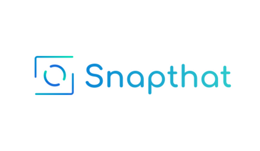
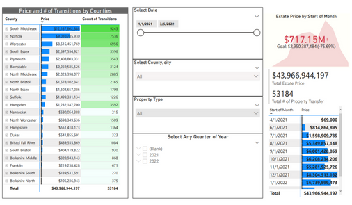
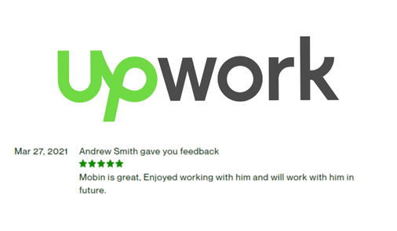

Expertise in delivering data-driven solutions with a proven track record of success in both company and freelance projects utilizing Python, AWS, Airflow, Docker, and more.

SnapThat International Fashion
Implemented an end-to-end data pipeline for fashion stores, utilizing Python, AWS, Airflow, Dockers, CI/CD, MongoDB, and data sources such as Zalando, Nordstrom, Zalora, and SthSweet. Expertise in utilizing various technologies to design and implement data pipeline and data analysis.
AI and Deep Learning Final year project (FYP)
Pioneered the development of a Deep Learning model for jewelry prediction, utilizing Python, Tensorflow, Google Cloud Platform (GCP), Docker, Jupyter, and Colab. Expertise in scraping and downloading millions of jewelry images from different fashion stores and assuring no Overfitting and Underfitting.

Cashier
That was the financial base startup, so I built a daily scheduler to get payment data from different payment methods APIs and centralize it in Cashier. Tools and Techniques Python, AWS (Lambda, Serverless, ECR, S3 ...), Apache Airflow, Jenkins, Dockers, GitLab CI/CD, SQL, etc
Local Leads 365
Local Lead 365 is a Gibbs Software Solution Startup, and we were getting Deed data on daily bases for different US states using hundreds of scrapes, for selling and for different confidential visualization and analysis. Uses Python, selenium, Beautifulsoup, AWS, Airflow, Jenkins, Jupyter Notebook, GitLab, PostgreSQL, etc.

Data Visualization and Analysis
Visualization for sold properties in the US, according to price, counties, states, property type, and forecast also. (Visualization Link), using PowerBI, Jupyter Notebook, Python. • I did visualization on health data which I scraped from the WHO website during the corona virus pendamic.

Data Collection for ML
• We scraped data and download more than 300 Million Images and audio and videos for a German AI-base company for their ML model training, we use techniques of parallel programming to scrape data more quickly, using Python, Selenium, Beautifulsoup, AWS (EC2, S3), and CSV to store millions of records, the data source was gettyimages, storyblock, etc. • We scraped Millions of ranking lists for ML training, ranking lists include the ranking of movies, food, players, etc